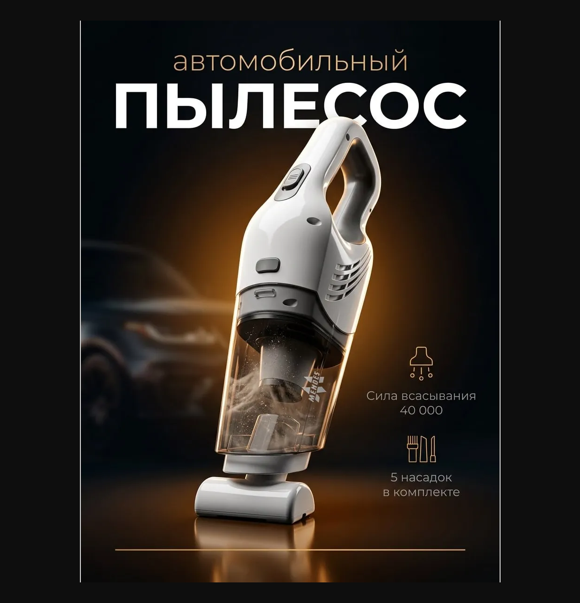

До оплаты
Уточните итоговую стоимость, доступный способ оплаты и состав заказа.
Способы оплаты ↗Сухой песок застревает между волокнами коврика. Здесь важны доступ к поверхности, насадка и последовательность уборки.
Уберите крупный мусор и выньте съёмные коврики. Чистите их отдельно: так проще добраться до ворса и не переносить песок обратно под сиденье. Для покрытия и средств ухода следуйте инструкции производителя автомобиля.
Сделайте медленный проход насадкой, затем повторите поперёк. Если песок остаётся в ворсе, аккуратно поднимите его подходящей щёткой и снова пропылесосьте. На деликатной обивке сначала проверьте щётку на незаметном участке.
Посмотрите не только на цифру мощности: важны удобная насадка, доступ под сиденье, обслуживание фильтра и результат на вашем покрытии. Устройство только для сухой уборки нельзя использовать для сбора жидкости. Испытание White Rock на песке здесь пока не представлено — обещать результат без него мы не будем.
Как выбрать пылесос для машины без погони за большими цифрами
Что попросить показать перед покупкой автомобильного пылесоса

Перед покупкой проверьте насадки, обслуживание фильтра и пригодность для вашего салона. Попросите показать работу с тем мусором, который убираете вы.
Рассмотреть товар и комплект ↗Этот сайт подготовлен магазином Mendes. Мы показываем собственный ассортимент и открыто обозначаем связь с продавцом.
Уточните итоговую стоимость, доступный способ оплаты и состав заказа.
Способы оплаты ↗Проверьте стоимость и срок доставки в ваш город. Если они не указаны — уточните у магазина.
Условия доставки ↗Прочитайте порядок возврата и уточните гарантию на конкретную модель.
Возврат и обмен ↗